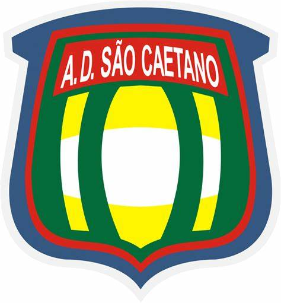

Barueri City
Introdução
Barueri é uma cidade dinâmica e em constante crescimento localizada no estado de São Paulo, Brasil. Parte da região metropolitana da capital paulista, Barueri tem experimentado uma transformação significativa nas últimas décadas, evoluindo de um pequeno município para um próspero centro urbano e econômico. Sua rica história, combinada com seus importantes marcos históricos e locais de referência, fazem dela um lugar fascinante para se explorar.
Pontos históricos
A história de Barueri remonta ao período colonial, quando a região era habitada por indígenas Tupi e Tupiniquins. A cidade foi oficialmente fundada em 24 de fevereiro de 1558, inicialmente como uma pequena aldeia. Seu nome, que significa “povoado dos barus” na língua Tupi, reflete suas origens indígenas. Durante o período imperial, Barueri foi parte da sesmaria de São João, uma grande porção de terra concedida para o cultivo e colonização.
No início do século XX, Barueri começou a se desenvolver com a chegada da ferrovia, que trouxe novos investimentos e impulsionou a industrialização. A construção da Estação Barueri, em 1880, foi um marco importante para o crescimento econômico da cidade. A partir da década de 1960, Barueri passou por um acelerado processo de urbanização e modernização, transformando-se em um importante polo comercial e financeiro.
Locais de referência
Parque Municipal de Barueri: Inaugurado em 1993, o Parque Municipal é um dos principais espaços verdes da cidade, oferecendo áreas para lazer, caminhadas e atividades ao ar livre. O parque é um refúgio natural que proporciona aos visitantes um contato direto com a flora local e um espaço para eventos culturais e comunitários.
Centro Histórico de Barueri: O Centro Histórico preserva algumas das construções originais da cidade, incluindo a Igreja Matriz de São João Batista, que é um dos marcos mais antigos e importantes de Barueri. A igreja, com sua arquitetura colonial, é um testemunho do passado histórico da cidade.